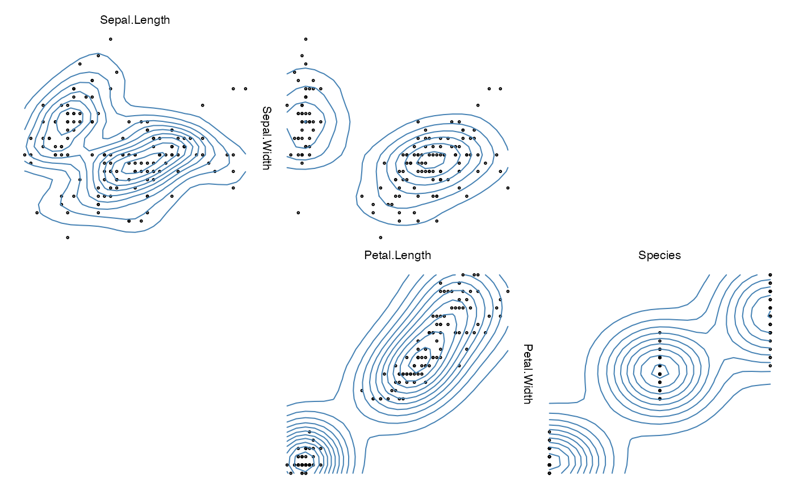

Extracting information for our default/provided plot2d()
Value
A list list with
xandy:the data to be plotted in the 2d plot
xcols:a list with all columns of
xgroups:the group numbers for each column of
xvars:the variable numbers for each column of
xglabs:the group labels for each column of
xvlabs:the variable labels for each column of
xxlimandylim:the x-axis and y-axis limits, and
same.group:a
logicalindicating whether the x and y variables belong to the same group.
Details
This is an auxiliary function called on zargs within any
1d plotting function (e.g. hist_1d_grid,
density_1d_graphics, or points_1d_loon)
to extract the 1d data from zargs needed for plotting.
For performance reasons, no checking of the input object is done.
See also
Other tools for constructing your own plot1d and plot2d functions:
burst(),
burst_aux(),
check_zargs(),
extract_1d(),
plot_indices()
Other data extraction functions to build plots:
extract_1d()
Other default 2d plot functions:
arrow_2d_graphics(),
arrow_2d_grid(),
arrow_2d_loon(),
axes_2d_graphics(),
axes_2d_grid(),
axes_2d_loon(),
density_2d_graphics(),
density_2d_grid(),
density_2d_loon(),
group_2d_graphics(),
group_2d_grid(),
group_2d_loon(),
label_2d_graphics(),
label_2d_grid(),
label_2d_loon(),
points_2d_graphics(),
points_2d_grid(),
points_2d_loon(),
qq_2d_graphics(),
qq_2d_grid(),
rect_2d_graphics(),
rect_2d_grid(),
rect_2d_loon()
Examples
## This function is used within the default (any user defined)
## 2d plot functions
##
my_2d_plot <- function(zargs, your_name = "BillyBob", ...) {
data_2d <- extract_2d(zargs)
msg <- paste("Components of zargs available",
"to construct a 2d plot for ",
your_name)
print(msg)
## just print the names of the data components
## which you might want to use in your plot
print(names(data_2d))
## You can plot whatever you want using the information in
## could use any of these to construct any 1d plot you want
## using R's graphics or any of zemplot's built in 1d plots.
##
## For example, here we could use
## use zenplot's base graphics functions
## First a scatterplot
points_2d_graphics(zargs, ...)
## to which we overlay density contours
density_2d_graphics(zargs, add = TRUE, col = "steelblue", ...)
## similar functions could be called for the other packages.
## You can print the source of anyone of the default functions
## to get some idea of managing details.
}
## And now try it out
zenplot(iris, plot2d = my_2d_plot)
#> [1] "Components of zargs available to construct a 2d plot for BillyBob"
#> [1] "x" "y" "xcols" "groups" "vars"
#> [6] "glabs" "vlabs" "xlim" "ylim" "same.group"
#> [1] "Components of zargs available to construct a 2d plot for BillyBob"
#> [1] "x" "y" "xcols" "groups" "vars"
#> [6] "glabs" "vlabs" "xlim" "ylim" "same.group"
#> [1] "Components of zargs available to construct a 2d plot for BillyBob"
#> [1] "x" "y" "xcols" "groups" "vars"
#> [6] "glabs" "vlabs" "xlim" "ylim" "same.group"
#> [1] "Components of zargs available to construct a 2d plot for BillyBob"
#> [1] "x" "y" "xcols" "groups" "vars"
#> [6] "glabs" "vlabs" "xlim" "ylim" "same.group"
